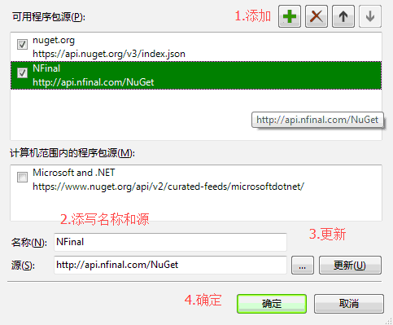
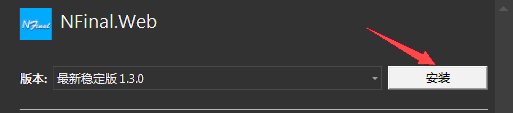

1.Right click Web Application,selected Nuget Manager
（must be .net framework 4.0 or lastest version）

(optional)If you can't install from official,pls
(optional)a.Find the nuget button

(optional)b.Add NFinal Nuget Server,name:NFinal,url:http://api.nfinal.com/nuget

(optional)c.Select Nuget Server

2.Search NFinal.Web nuget package

3.Install Final.Web

4.Run AutoConfig.exe at NFinal folder.
5.Input the Area name(exp. App,Admin,Shop,Forum),then press enter key.
6.Click giveup or override button.
7.Browse Web.Compiler.aspx
8.Complete!find【Area name】/Web/IndexController/Index.html,Browe it.